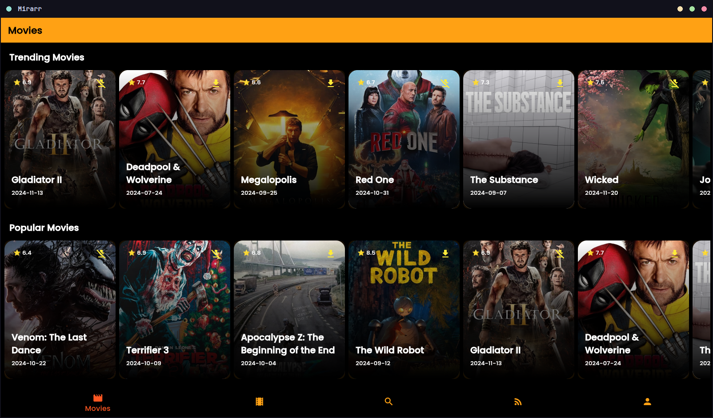
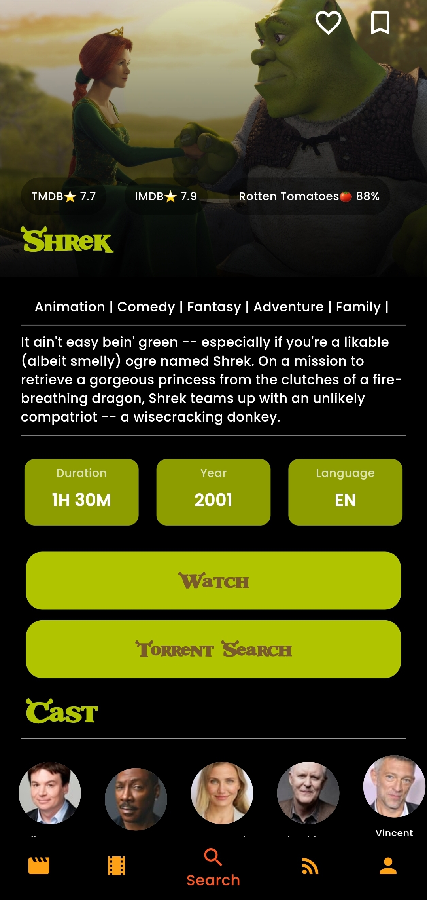
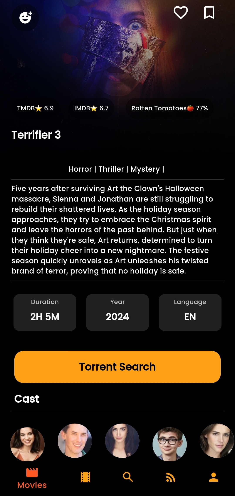
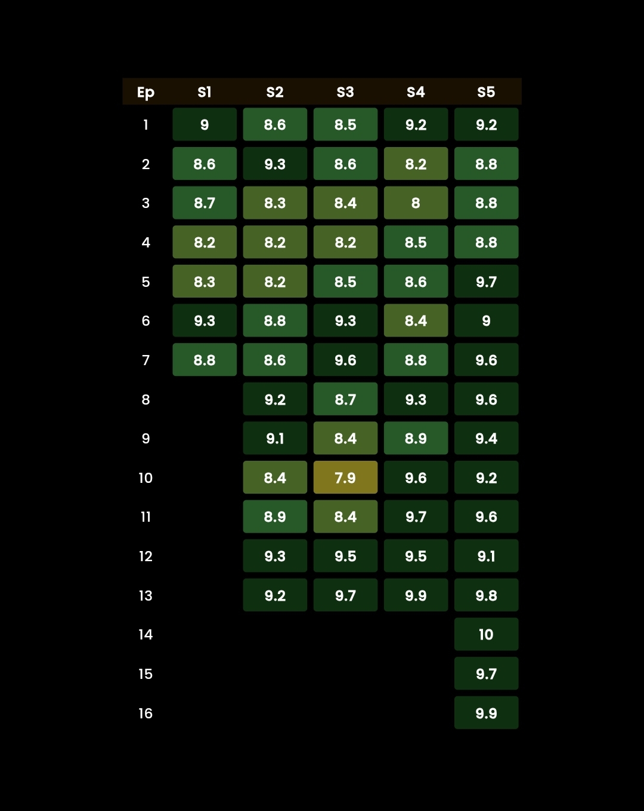

Desktop Interface


Mobile Layout



What is Mirarr?
Mirarr is a fully open-source movie and TV show client designed for speed, flexibility, and absolute privacy. Written to run natively across major platforms, it wraps media metadata, ratings, and playback indexes into a unified, responsive interface.
Unlike standard commercial streaming catalog tools, Mirarr operates with zero tracking or telemetry. It fetches listings directly from community-trusted resources, giving developers and FOSS enthusiasts an clean interface devoid of promotional fluff.
Architecture & Key Strengths
-
Multi-Platform Adaptability
Built from the ground up to target Android, iOS (for side-loading), Windows, and Linux. The responsive desktop views rearrange cleanly into a thumb-optimized layout on mobile devices.
-
TMDB & OMDB Integration
Connects directly to the TMDB API to manage watchlists, favorites, and ratings. The authentication process is handled locally via secure tokens directly with TMDB, keeping user metadata local and non-custodial.
-
Custom Styling Cues
For films and series with distinct cinematic flair, the app supports custom stylistic profiles. The community can suggest or request unique stylesheets directly through the issue tracker to match individual movie aesthetics.
Installation & Setup
Mirarr is distributed as raw build archives and compiled binaries on the official release index. Arch Linux users can install directly via the AUR:
yay -S mirarr-bin
Note: Linux installations require the xdg-user-dirs package to correctly reference local directories. iOS sideloads are distributed as compiled IPA bundles.